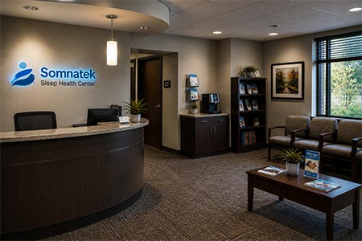

Patient Resources

The following materials are provided for reference. Somnatek Sleep Health Center is no longer providing clinical services. These resources are retained for the benefit of former patients and the general public.
Forms and Documents
The following forms were in use at Somnatek Sleep Health Center during its operational period. They are provided for reference only. Completed forms cannot be submitted to Somnatek.
- Patient Intake Form (PDF)
- Sleep Study Informed Consent (PDF)
- CPAP Compliance Log (PDF)
- Sleep Hygiene Reference Guide (PDF)
- Insurance Prior Authorization Request Form (PDF)
Educational Materials
Understanding Sleep Studies
A polysomnography (PSG) study monitors multiple body functions during sleep, including brain activity, eye movements, heart rate, breathing, oxygen levels, and limb movements. Results are interpreted by a board-certified sleep medicine physician.
Most patients find in-lab sleep studies straightforward. The monitoring equipment records data but does not restrict movement. Patients are encouraged to sleep as normally as possible. Some patients require two nights to complete a full study.
Sleep Hygiene
Good sleep hygiene practices support consistent, restorative sleep. General recommendations include maintaining a fixed sleep and wake schedule, limiting caffeine consumption after noon, reserving the bed for sleep, and creating a quiet, cool sleep environment. Individual recommendations should be discussed with a current provider.
Understanding Your CPAP
Continuous positive airway pressure (CPAP) therapy delivers a steady stream of air to maintain an open airway during sleep. Regular use is associated with significant reduction in apnea events and improvement in daytime alertness. Compliance data are typically reviewed at follow-up visits.
CPAP Support
Somnatek Sleep Health Center no longer provides CPAP equipment fitting, supply orders, or compliance monitoring. Former patients requiring CPAP support should contact their current primary care or sleep medicine provider. Many CPAP suppliers offer direct telephone and online support.
If you were issued CPAP equipment through Somnatek, your equipment records were included in the records transfer to Dorsal Health Holdings LLC. Contact Dorsal Health Holdings LLC for documentation of equipment specifications if needed by a new provider.